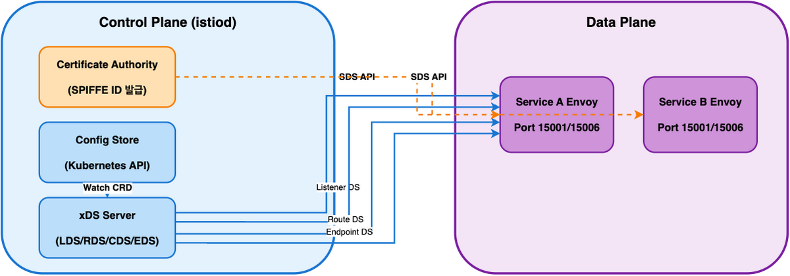
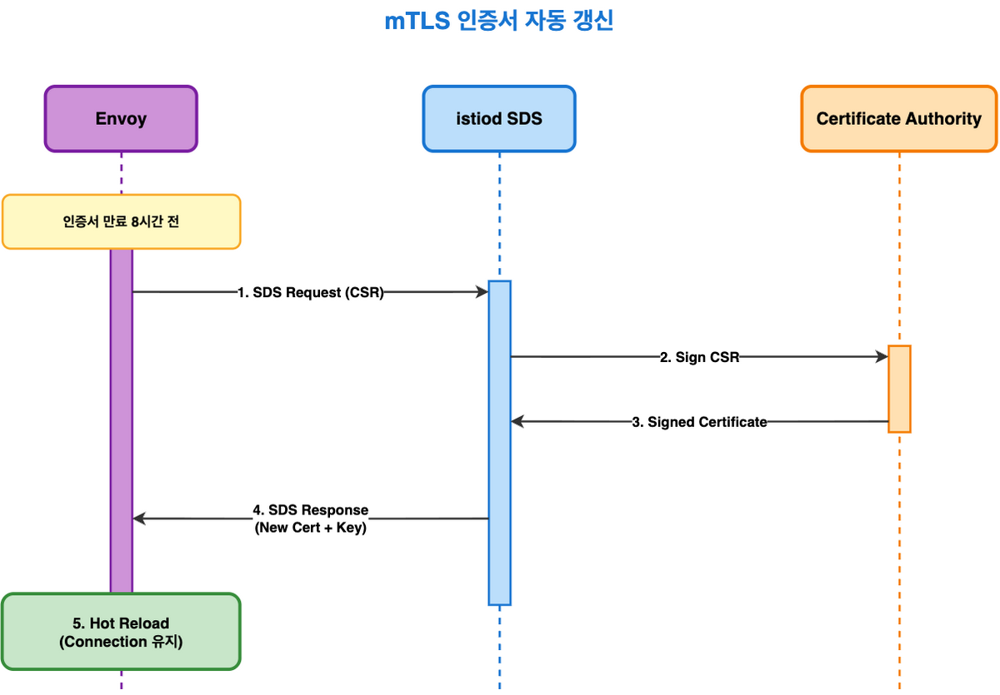
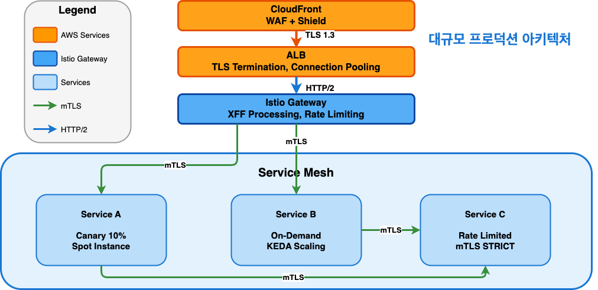
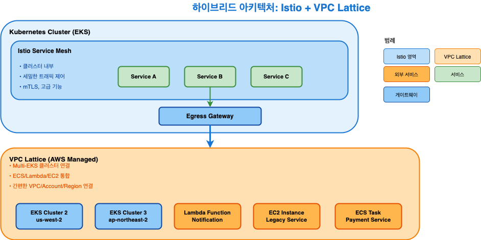

네트워크 전문가를 위한 실전 가이드 (Level 300)
2시간 세션 - Advanced/Expert
필수 사전 지식:
학습 목표: Envoy 내부 동작, xDS 프로토콜, 프로덕션 문제 해결
규모:
구체적 문제:
크로스 AZ 비용: 월 $50K (1TB/day × 30일 × $0.01/GB × 2방향) 배포 실패율: 15% (수동 Canary, 메트릭 누락) mTLS 구현: 12개 언어별 중복 (Go, Java, Python, Node...) Rate Limit: 서비스마다 다른 로직 → 불일치 배포 시간: 4시간 (수동 검증, 승인, 롤백 포함)
2010년대 마이크로서비스 시대:
모놀리스 → 마이크로서비스 전환 - Netflix: 수백 개 서비스 - Uber: 2,000+ 서비스 - Amazon: SOA → 마이크로서비스
새로운 문제들:
서비스 간 통신 복잡도 폭발 - N개 서비스 = N×(N-1) 연결 - 100 서비스 = 9,900 연결 관리 보안 (mTLS)을 각 언어로 구현 - Go, Java, Python, Node.js, Ruby, C++... - 중복 코드, 버그, 인증서 관리 관찰성 (Observability) 부재 - 어느 서비스가 느린지? - 에러는 어디서? 트래픽 제어 어려움 - Canary 배포 = kubectl scale (부정확) - Circuit Breaking = 각자 구현
Lyft의 문제:
- 수백 개 마이크로서비스 (Python, Go, Java 혼재) - 기존 프록시 한계 (HAProxy, NGINX) → 정적 설정 → L7 기능 부족 → 각 서비스에 로드 밸런서 코드 중복
Matt Klein의 해결책: Envoy
2016년 오픈소스 공개 → CNCF
Google + IBM + Lyft 협력:
문제: Envoy는 훌륭하지만 설정이 복잡 → 각 마이크로서비스마다 Envoy 설정? → 수백 개 서비스 = 수백 개 설정 파일 해결: Kubernetes 네이티브 컨트롤 플레인 → VirtualService, DestinationRule (CRD) → istiod가 자동으로 Envoy 설정 생성 → xDS API로 동적 푸시
Istio 주요 마일스톤:
1. 트래픽 관리 (Traffic Management)
Canary 배포: 1% 단위로 정밀 제어 A/B 테스팅: Header 기반 라우팅 Circuit Breaking: 자동 장애 격리 Retry & Timeout: 세밀한 설정
2. 보안 (Security)
자동 mTLS: 코드 수정 없이 암호화 SPIFFE Identity: 표준 기반 인증 AuthorizationPolicy: L7 수준 접근 제어 인증서 자동 갱신: 15분마다
3. 관찰성 (Observability)
자동 메트릭: 50+ Prometheus 메트릭 분산 추적: Jaeger, Zipkin 통합 Access Log: 모든 요청 기록 Kiali: 실시간 서비스 토폴로지
4. 회복력 (Resilience)
Outlier Detection: 느린 Pod 자동 제거 Connection Pool: 과부하 방지 Locality Routing: 비용 절감 Fault Injection: Chaos Engineering

xDS API 구성:
LDS (Listener Discovery Service) → 15001: Inbound, 15006: Outbound RDS (Route Discovery Service) → VirtualService 규칙 CDS (Cluster Discovery Service) → DestinationRule 정책 EDS (Endpoint Discovery Service) → Pod IP, Health, Locality SDS (Secret Discovery Service) → mTLS 인증서, Private Key
업데이트 흐름:
VirtualService 생성 → istiod가 RDS 업데이트 감지 → Envoy에 새 라우팅 규칙 푸시 (xDS) → Envoy가 즉시 적용 (< 100ms)
Listener Filter Chain:
1. TLS Inspector → SNI 추출 2. HTTP Connection Manager → HTTP/1.1, HTTP/2, HTTP/3 3. Router Filter → VirtualService 매칭 4. Upstream Cluster → DestinationRule 적용 5. Load Balancer → Pod 선택
Routing 우선순위:
# VirtualService match 우선순위 1. Exact match (exact: "/api/v1/users") 2. Prefix match (prefix: "/api/") 3. Regex match (regex: "^/api/v[0-9]+/") 4. 기본 route (match 없음)
User-Agent 기반 라우팅:
spec: http: # Mobile 디바이스 - match: - headers: user-agent: regex: ".*Mobile.*" route: - destination: host: myapp subset: mobile # Desktop (기본) - route: - destination: host: myapp subset: desktop
spec: http: # API v3 (헤더 기반) - match: - headers: x-api-version: exact: "v3" route: - destination: host: api-service subset: v3 # VIP 사용자 (Custom Header) - match: - headers: x-user-tier: exact: "vip" route: - destination: host: api-service subset: vip # 기본 (v1) - route: - destination: host: api-service subset: v1
URI Rewrite:
spec: http: # /old-api → /api/v2 로 재작성 - match: - uri: prefix: "/old-api" rewrite: uri: "/api/v2" route: - destination: host: api-service
Redirect:
# 301 Redirect - match: - uri: prefix: "/old-page" redirect: uri: "/new-page" authority: "newapp.example.com"
spec: http: - route: - destination: host: reviews headers: request: headers: request: add: x-custom-header: "custom-value" x-forwarded-proto: "https" set: x-api-version: "v2" remove: - x-internal-header response: add: x-response-time: "100ms" x-server-version: "v1.2.3" remove: - x-sensitive-info
AND 조건 (모든 조건 일치):
http: - match: - uri: prefix: "/api" headers: x-api-version: exact: "v2" queryParams: debug: exact: "true" route: - destination: host: api-debug
OR 조건 (여러 match 블록):
http: - match: - uri: prefix: "/api/v1" - uri: prefix: "/api/v2" route: - destination: host: api-service
우선순위: 위에서 아래로 순차 평가 → 구체적인 규칙을 먼저 배치
VirtualService 자동 조정:
# Rollout이 자동으로 업데이트하는 부분 apiVersion: networking.istio.io/v1 kind: VirtualService metadata: name: myapp-vsvc spec: http: - name: primary route: - destination: host: myapp subset: stable weight: 90 # Rollout Controller가 조정 - destination: host: myapp subset: canary weight: 10 # Rollout Controller가 조정
내부 동작:
Rollout Controller:
- Image 변경 감지 - Canary ReplicaSet 생성 - VirtualService weight 업데이트 (10%) - AnalysisRun 시작
Analysis Controller:
- Prometheus 쿼리 실행 (30초 간격) - successCondition 평가 - failureLimit 카운팅 - Rollout에 결과 전달 (Success/Failed)
자동 진행/롤백:
Success → weight 증가 (10% → 25%) | Failed → weight 복원 (10% → 0%), Stable로 복구
apiVersion: argoproj.io/v1alpha1 kind: AnalysisTemplate metadata: name: comprehensive-analysis spec: args: - name: service-name - name: canary-pod-hash metrics: # 1. 성공률 (5xx 에러 < 5%) - name: success-rate interval: 30s count: 10 successCondition: result >= 0.95 failureLimit: 3 provider: prometheus: address: http://prometheus.istio-system:9090 query: | sum(rate(istio_requests_total{ destination_service_name="{{args.service-name}}", destination_workload=~".*{{args.canary-pod-hash}}", response_code!~"5.*"}[2m])) / sum(rate(istio_requests_total{ destination_service_name="{{args.service-name}}", destination_workload=~".*{{args.canary-pod-hash}}"}[2m]))
# 2. P95 Latency (< 500ms) - name: p95-latency interval: 30s count: 10 successCondition: result < 500 failureLimit: 3 provider: prometheus: query: | histogram_quantile(0.95, sum(rate(istio_request_duration_milliseconds_bucket{ destination_service_name="{{args.service-name}}", destination_workload=~".*{{args.canary-pod-hash}}"}[2m])) by (le)) # 3. 메모리 사용률 (< 80%) - name: memory-usage interval: 30s count: 10 successCondition: result < 0.8 provider: prometheus: query: | max(container_memory_working_set_bytes{ pod=~"{{args.service-name}}-.*{{args.canary-pod-hash}}.*"} ) / max(container_spec_memory_limit_bytes{ pod=~"{{args.service-name}}-.*{{args.canary-pod-hash}}.*"})
문제 시나리오:
VirtualService: 10% Canary 실제 트래픽: 50% Canary ( 불일치!)
원인:
# DestinationRule의 서브셋 레이블이 잘못됨 kubectl get pods -l app=myapp --show-labels # Canary Pod에 stable 레이블이 남아있음 myapp-canary-abc123 app=myapp,version=canary,rollouts-pod-template-hash=stable
해결:
# Rollout이 자동으로 관리하는 레이블 확인 kubectl get replicaset -l app=myapp -o yaml | grep rollouts-pod-template-hash
Locality Priority 구조:
Priority 0 (Local AZ): - us-east-1a/pod-1: healthy, weight=1 - us-east-1a/pod-2: healthy, weight=1 Priority 1 (Other AZ): - us-east-1b/pod-3: healthy, weight=1 - us-east-1c/pod-4: degraded (excluded) Priority 2 (Remote Region): - us-west-1a/pod-5: healthy, weight=1
로드 밸런싱 알고리즘:
Overprovisioning Factor: 140% (기본값)
건강한 엔드포인트 비율 계산:
Healthy × 1.4 ≥ Total
예제:
시나리오 1: 10개 엔드포인트, 8개 healthy → 8 × 1.4 = 11.2 ≥ 10 → Priority 0에 100% 전송 시나리오 2: 10개 엔드포인트, 7개 healthy → 7 × 1.4 = 9.8 < 10 → Priority 1로 spillover
목적: 안정성 확보 + 비용 절감
apiVersion: networking.istio.io/v1 kind: DestinationRule metadata: name: advanced-locality spec: host: api-service trafficPolicy: loadBalancer: simple: LEAST_REQUEST localityLbSetting: enabled: true # 세밀한 분배 비율 distribute: - from: us-east-1/us-east-1a/* to: "us-east-1/us-east-1a/*": 80 # 같은 AZ 80% "us-east-1/us-east-1b/*": 15 # 인접 AZ 15% "us-east-1/us-east-1c/*": 5 # 원격 AZ 5% # Failover 순서 failover: - from: us-east-1/us-east-1a to: us-east-1/us-east-1b # 1순위 Failover - from: us-east-1/us-east-1b to: us-east-1/us-east-1c
시나리오: 100 Services, 각 1TB/day
Before (Locality 없음):
크로스 AZ 트래픽: 1TB/day × 100 services × 50% (평균) = 50TB/day 비용: 50TB × 30일 × $0.01/GB × 2방향 = $30,000/월
After (80% Local AZ):
크로스 AZ 트래픽: 50TB/day × 20% = 10TB/day 비용: 10TB × 30일 × $0.01/GB × 2방향 = $6,000/월 절감: $24,000/월 (80%)
# 1. Pod의 Locality 레이블 확인 kubectl get pods -o json | jq -r '.items[] | "\(.metadata.name)\t\(.metadata.labels["topology.kubernetes.io/region"])\t \(.metadata.labels["topology.kubernetes.io/zone"])"' # 2. Envoy Endpoint Priority 확인 istioctl proxy-config endpoints <pod-name> --cluster "outbound|9080||api-service.default.svc.cluster.local" -o json | \ jq '.[] | .localityLbEndpoints[] | {locality: .locality, priority: .priority, lb_endpoints: .lbEndpoints[]}' # 3. 실제 트래픽 분포 확인 (Prometheus) sum by (destination_workload_locality) (rate(istio_requests_total{ source_workload="frontend", destination_service="api-service"}[5m]))
타임라인:
T-120s: EC2 Spot Termination Notice T-90s: Node Termination Handler → Cordon Node T-60s: kubelet → SIGTERM to Pods T-30s: Envoy PreStop Hook 시작 T-20s: Envoy Health Check → /healthz/ready 실패 반환 T-15s: istiod → EDS에서 Endpoint 제거 T-10s: 모든 Envoy Sidecar가 EDS 업데이트 수신 T-5s: 기존 연결 Drain (최대 30초) T-0s: Pod 종료
핵심: Envoy가 새 연결을 거부하고 기존 연결을 정리
apiVersion: keda.sh/v1alpha1 kind: ScaledObject metadata: name: advanced-scaling spec: scaleTargetRef: name: api-service minReplicaCount: 3 maxReplicaCount: 100 # 다중 Trigger (OR 조건) triggers: # 1. RPS 기반 Scaling - type: prometheus metadata: serverAddress: http://prometheus:9090 query: | sum(rate(istio_requests_total{ destination_service="api-service"}[1m])) threshold: "1000" # 1000 RPS per replica # 2. Queue Depth 기반 Scaling - type: prometheus metadata: query: | sum(envoy_cluster_upstream_rq_pending{ cluster_name=~"outbound.*api-service.*"}) threshold: "50" # 50개 대기 요청
# 3. CPU + Memory 복합 메트릭 - type: prometheus metadata: query: | (avg(rate(container_cpu_usage_seconds_total{ pod=~"api-service-.*"}[1m])) * 100) + (avg(container_memory_working_set_bytes{ pod=~"api-service-.*"}) / avg(container_spec_memory_limit_bytes{ pod=~"api-service-.*"}) * 100) threshold: "150" # CPU + Memory > 150% # Cool-down 설정 advanced: horizontalPodAutoscalerConfig: behavior: scaleDown: stabilizationWindowSeconds: 300 # 5분 안정화 policies: - type: Percent value: 50 # 최대 50%씩 축소 periodSeconds: 60 scaleUp: stabilizationWindowSeconds: 0 # 즉시 확장 policies: - type: Percent value: 100 # 최대 2배 확장 periodSeconds: 15
문제: Spot Termination 중 Scale-out 발생
시나리오:
1. Spot Termination 시작 (3개 Pod 종료) 2. KEDA가 부하 증가 감지 → Scale-out 트리거 3. 새 Pod이 Spot Node에 스케줄링 () 4. 또 다시 Termination (무한 반복)
해결: Priority Class + Topology Spread
apiVersion: v1 kind: PriorityClass metadata: name: on-demand-preferred value: 1000 globalDefault: false preemptionPolicy: PreemptLowerPriority
apiVersion: apps/v1 kind: Deployment spec: template: spec: priorityClassName: on-demand-preferred # Spot/On-Demand 균등 분산 topologySpreadConstraints: - maxSkew: 1 topologyKey: node.kubernetes.io/instance-type whenUnsatisfiable: DoNotSchedule labelSelector: matchLabels: app: api-service # AZ 간 균등 분산 - maxSkew: 2 topologyKey: topology.kubernetes.io/zone whenUnsatisfiable: ScheduleAnyway labelSelector: matchLabels: app: api-service
SPIFFE ID 구조:
spiffe://trust-domain/ns/namespace/sa/service-account 예시: spiffe://cluster.local/ns/production/sa/api-service
인증서 체인:
Root CA (istiod CA) └─ Intermediate CA (선택) └─ Workload Certificate (24h TTL) - SAN: spiffe://cluster.local/ns/production/sa/api-service - Issuer: istiod - Subject: O=cluster.local
자동 갱신 흐름:

특징:
SPIFFE ID 예시:
spiffe://cluster.local/ ns/production/ sa/api-service
인증서 유형:
1. 워크로드 mTLS
2. Gateway TLS
단계적 전환:
# Phase 1: PERMISSIVE (기본값) apiVersion: security.istio.io/v1 kind: PeerAuthentication metadata: name: default namespace: istio-system spec: mtls: mode: PERMISSIVE # mTLS + Plain 모두 허용 # Phase 2: 모니터링 (2주) # Prometheus Query: sum(rate(istio_requests_total{ connection_security_policy="mutual_tls"}[5m])) / sum(rate(istio_requests_total[5m])) # 목표: > 99% # Phase 3: STRICT 전환 spec: mtls: mode: STRICT # Plain 차단
증상:
upstream connect error or disconnect/reset before headers. reset reason: connection failure
디버깅:
# 1. mTLS 상태 확인 istioctl authn tls-check <source-pod> <dest-service> # 출력: HOST:PORT STATUS CLIENT SERVER api-service.prod.svc CONFLICT mTLS HTTP ← 문제! # 2. PeerAuthentication 확인 kubectl get peerauthentication -A # 3. DestinationRule TLS 설정 확인 kubectl get destinationrule api-service -o yaml | grep tls # 4. Envoy Secret 확인 (인증서 갱신 실패?) istioctl proxy-config secret <pod> -o json | \ jq '.dynamicActiveSecrets[] | select(.name | contains("default"))'
X-Forwarded-For 구조:
Client IP: 203.0.113.5 CloudFront: 198.51.100.10 ALB: 10.0.1.20 Istio Gateway: 10.0.2.30 X-Forwarded-For: 203.0.113.5, 198.51.100.10, 10.0.1.20 ^^^^^^^^^^^^ (실제 Client IP)
xff_num_trusted_hops 계산:
CloudFront (1) + ALB (1) = 2 hops XFF 헤더에서 뒤에서 2번째 = 실제 Client IP
apiVersion: networking.istio.io/v1alpha3 kind: EnvoyFilter metadata: name: gateway-xff-advanced namespace: istio-system spec: workloadSelector: labels: istio: ingressgateway configPatches: - applyTo: NETWORK_FILTER match: context: GATEWAY listener: filterChain: filter: name: "envoy.filters.network.http_connection_manager" patch: operation: MERGE value: typed_config: "@type": type.googleapis.com/envoy.extensions.filters.network.http_connection_manager.v3.HttpConnectionManager use_remote_address: true xff_num_trusted_hops: 2 skip_xff_append: false # XFF 헤더에 Envoy IP 추가 # Original IP Detection original_ip_detection_extensions: - name: envoy.http.original_ip_detection.xff typed_config: "@type": type.googleapis.com/envoy.extensions.http.original_ip_detection.xff.v3.XffConfig xff_num_trusted_hops: 2
apiVersion: security.istio.io/v1 kind: AuthorizationPolicy metadata: name: advanced-authz spec: selector: matchLabels: app: admin-api # 기본 DENY action: DENY rules: # Rule 1: 회사 IP + 근무 시간만 허용 - from: - source: notRemoteIpBlocks: - "203.0.113.0/24" when: - key: request.time values: - "Mon,Tue,Wed,Thu,Fri 09:00:00-18:00:00 KST" # Rule 2: Admin JWT 없으면 차단 - from: - source: notRequestPrincipals: - "https://auth.example.com/admin"
Envoy HTTP Filter 순서:
1. envoy.filters.http.jwt_authn → JWT 토큰 검증 2. envoy.filters.http.ext_authz → 외부 인증 서버 3. envoy.filters.http.cors → CORS 처리 4. envoy.filters.http.local_ratelimit → Rate Limiting (여기에 삽입 예제) 5. envoy.filters.http.router → 최종 라우팅 (항상 마지막)
INSERT_BEFORE vs INSERT_AFTER:
# JWT 검증 전에 Filter 삽입 operation: INSERT_BEFORE match: name: "envoy.filters.http.jwt_authn" # JWT 검증 후에 Filter 삽입 operation: INSERT_AFTER match: name: "envoy.filters.http.jwt_authn"
순서가 중요한 이유:
동작 원리:
Token Bucket: - Capacity: 100 tokens (max_tokens) - Refill Rate: 10 tokens/sec (tokens_per_fill) - Fill Interval: 1s (fill_interval) 요청 처리: 1. Token 1개 소비 2. Token 부족 → 429 Too Many Requests 3. 1초마다 10개 Token 추가 (최대 100개)
Burst 트래픽 허용:
평소: 10 RPS 순간: 100 RPS (Burst) → Token을 모두 소진 이후: 10 RPS로 제한 (Token 재충전 중)
apiVersion: networking.istio.io/v1alpha3 kind: EnvoyFilter metadata: name: user-tiered-ratelimit spec: workloadSelector: labels: app: api-service configPatches: - applyTo: HTTP_FILTER match: context: SIDECAR_INBOUND listener: filterChain: filter: name: "envoy.filters.network.http_connection_manager" subFilter: name: "envoy.filters.http.router" patch: operation: INSERT_BEFORE value: name: envoy.filters.http.local_ratelimit typed_config: "@type": type.googleapis.com/envoy.extensions.filters.http.local_ratelimit.v3.LocalRateLimit stat_prefix: http_local_rate_limiter # 사용자 tier에 따른 Rate Limit token_bucket: max_tokens: 10 tokens_per_fill: 10 fill_interval: 1s
# Descriptor Entries로 세밀한 제어 descriptors: # Premium 사용자: 1000 RPS - entries: - key: header_match value: "x-user-tier:premium" token_bucket: max_tokens: 10000 tokens_per_fill: 1000 fill_interval: 1s # Standard 사용자: 100 RPS - entries: - key: header_match value: "x-user-tier:standard" token_bucket: max_tokens: 1000 tokens_per_fill: 100 fill_interval: 1s # Free 사용자: 10 RPS - entries: - key: header_match value: "x-user-tier:free" token_bucket: max_tokens: 100 tokens_per_fill: 10 fill_interval: 1s
아키텍처:
Envoy Sidecar (각 Pod) → local_ratelimit Filter (EnvoyFilter로 구성) → Token Bucket 알고리즘 → 설정 기반 제한 (별도 서비스 불필요)
# EnvoyFilter로 구성 apiVersion: networking.istio.io/v1alpha3 kind: EnvoyFilter metadata: name: filter-ratelimit namespace: istio-system spec: workloadSelector: labels: app: productpage configPatches: - applyTo: HTTP_FILTER match: context: SIDECAR_INBOUND listener: filterChain: filter: name: "envoy.filters.network.http_connection_manager" subFilter: name: "envoy.filters.http.router" patch: operation: INSERT_BEFORE value: name: envoy.filters.http.local_ratelimit typed_config: "@type": type.googleapis.com/envoy.extensions.filters.http.local_ratelimit.v3.LocalRateLimit stat_prefix: http_local_rate_limiter token_bucket: max_tokens: 10000 tokens_per_fill: 10000 fill_interval: 1s
Redis 기반 분산 Rate Limiting (선택적):
# 고급 사용 사례: 정확한 분산 카운팅이 필요한 경우 # 외부 Rate Limit Service (Lyft/ratelimit) + Redis 사용 가능 apiVersion: networking.istio.io/v1alpha3 kind: EnvoyFilter metadata: name: filter-ratelimit-svc namespace: istio-system spec: workloadSelector: labels: app: productpage configPatches: - applyTo: HTTP_FILTER match: context: SIDECAR_INBOUND listener: filterChain: filter: name: "envoy.filters.network.http_connection_manager" subFilter: name: "envoy.filters.http.router" patch: operation: INSERT_BEFORE value: name: envoy.filters.http.ratelimit typed_config: "@type": type.googleapis.com/envoy.extensions.filters.http.ratelimit.v3.RateLimit domain: productpage-ratelimit failure_mode_deny: true rate_limit_service: grpc_service: envoy_grpc: cluster_name: rate_limit_cluster transport_api_version: V3 # 참고: 대부분의 경우 Local Rate Limiting으로 충분 # 외부 서비스는 정밀한 분산 제어가 필요한 경우에만 사용
apiVersion: networking.istio.io/v1alpha3 kind: EnvoyFilter metadata: name: lua-script spec: workloadSelector: labels: app: api-service configPatches: - applyTo: HTTP_FILTER patch: operation: INSERT_BEFORE value: name: envoy.filters.http.lua typed_config: "@type": type.googleapis.com/envoy.extensions.filters.http.lua.v3.Lua inline_code: | function envoy_on_request(request_handle) -- Custom Header 추가 local request_id = request_handle:headers():get("x-request-id") if request_id == nil then request_handle:headers():add("x-request-id", string.format("%s-%d", os.time(), math.random(1000000))) end
-- Geo IP 기반 라우팅 헤더 추가 local xff = request_handle:headers():get("x-forwarded-for") if xff ~= nil then local client_ip = xff:match("^([^,]+)") -- GeoIP 조회 (실제로는 External Service 호출) if client_ip:match("^203%.0%.113%.") then request_handle:headers():add("x-geo-country", "KR") request_handle:headers():add("x-geo-region", "ap-northeast-2") end end -- Request Body 크기 제한 local content_length = request_handle:headers():get("content-length") if content_length ~= nil and tonumber(content_length) > 1048576 then request_handle:respond( {[":status"] = "413", ["content-type"] = "text/plain"}, "Payload Too Large") end end function envoy_on_response(response_handle) -- Response에 Server-Timing 헤더 추가 response_handle:headers():add("server-timing", string.format("envoy;dur=%d", response_handle:metadata():get("envoy.filter_state.downstream_timing"))) end

CPU/Memory 최적화:
apiVersion: v1 kind: Pod metadata: annotations: # Envoy CPU 제한 (기본값: 2000m) sidecar.istio.io/proxyCPULimit: "1000m" sidecar.istio.io/proxyCPU: "100m" # Envoy Memory 제한 (기본값: 1024Mi) sidecar.istio.io/proxyMemoryLimit: "512Mi" sidecar.istio.io/proxyMemory: "128Mi" # Concurrency (Worker Threads, 기본값: 2) sidecar.istio.io/proxyConcurrency: "4" # Stats 수집 비활성화 (불필요한 메트릭 제거) sidecar.istio.io/statsInclusionPrefixes: "cluster.outbound,listener"
apiVersion: networking.istio.io/v1 kind: DestinationRule metadata: name: high-performance spec: host: api-service trafficPolicy: connectionPool: tcp: maxConnections: 1000 connectTimeout: 3s tcpKeepalive: time: 7200s interval: 75s http: http1MaxPendingRequests: 1000 http2MaxRequests: 10000 maxRequestsPerConnection: 100 maxRetries: 3 idleTimeout: 300s h2UpgradePolicy: UPGRADE
apiVersion: networking.istio.io/v1 kind: DestinationRule metadata: name: circuit-breaker spec: host: api-service trafficPolicy: outlierDetection: consecutive5xxErrors: 5 # 5번 연속 5xx → Eject interval: 30s # 30초마다 검사 baseEjectionTime: 30s # 30초간 Ejection maxEjectionPercent: 50 # 최대 50% Pod만 Eject minHealthPercent: 40 # 최소 40% Healthy 유지 # Failure Percentage 기반 (추가) splitExternalLocalOriginErrors: true consecutiveLocalOriginFailure: 5 consecutiveGatewayErrors: 3
Prometheus Queries:
# 1. mTLS 사용률 sum(rate(istio_requests_total{connection_security_policy="mutual_tls"}[5m])) / sum(rate(istio_requests_total[5m])) # 2. Locality Routing 효율성 sum by (source_workload_locality, destination_workload_locality) ( rate(istio_requests_total[5m]) ) # 3. Circuit Breaker Ejection sum(envoy_cluster_outlier_detection_ejections_active) by (cluster_name) # 4. Connection Pool Overflow rate(envoy_cluster_upstream_cx_overflow[5m]) # 5. P95 Latency per Service histogram_quantile(0.95, sum(rate(istio_request_duration_milliseconds_bucket[5m])) by (destination_service, le)) # 6. 5xx Error Rate sum(rate(istio_requests_total{response_code=~"5.*"}[5m])) / sum(rate(istio_requests_total[5m]))
비용 절감 (연간 기준):
운영 효율 (150 Services 기준):
환경:
Phase 1-3 결과 (6개월):
Phase 1 (관찰성): - Istio 설치 (mTLS PERMISSIVE) - Prometheus/Grafana 통합 - 메트릭 기반 의사결정 가능 Phase 2 (보안): - mTLS STRICT 전환 (99.8% 적용률) - AuthorizationPolicy 50개 적용 - Zero Trust 달성 Phase 3 (트래픽 관리): - Locality Routing: 크로스 AZ 비용 $50K → $10K - Argo Rollouts: 배포 실패율 15% → 2% - 평균 배포 시간: 4시간 → 1시간
Istio를 선택하세요:
1. 멀티 클라우드 전략 (AWS + GCP + Azure) 2. 세밀한 트래픽 제어 필요 - 1% 단위 Canary - Header 기반 A/B 테스팅 - Traffic Mirroring 3. 강력한 관찰성 요구 - 50+ 자동 메트릭 - 분산 추적 4. 복잡한 보안 요구사항 - L7 Authorization - JWT 인증 5. 팀에 Service Mesh 경험 있음 6. 클라우드 벤더 종속 회피
VPC Lattice를 선택하세요:
1. AWS 중심 아키텍처 2. 운영 간편성 우선 - 완전 관리형 서비스 - 업그레이드 자동 3. EKS + ECS + Lambda 혼합 환경 4. 빠른 time-to-market - 10-20분 설정 - 낮은 학습 곡선 5. 소규모 팀 (운영 인력 제한) 6. 낮은 운영 비용 - 리소스 오버헤드 0 - 사용량 기반 과금
100 파드 환경 기준 (연간 비용):
Istio의 숨겨진 비용: 전담 팀, 학습 곡선 (3-6개월), 장애 대응
최적 조합:

Istio 핵심 가치:
프로덕션 필수 설정:
공식 문서:
고급 가이드: